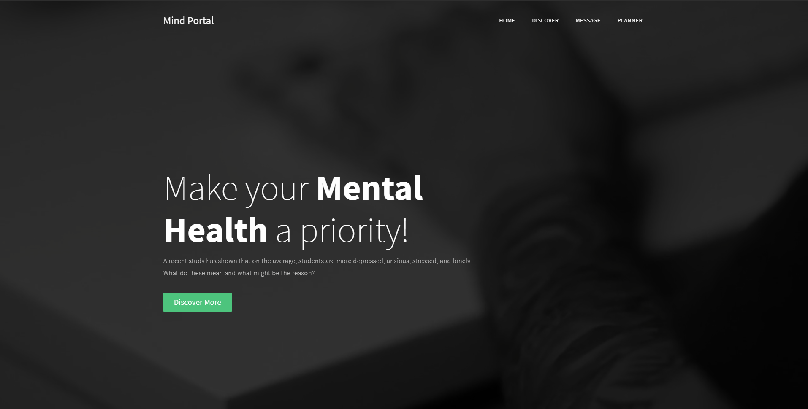
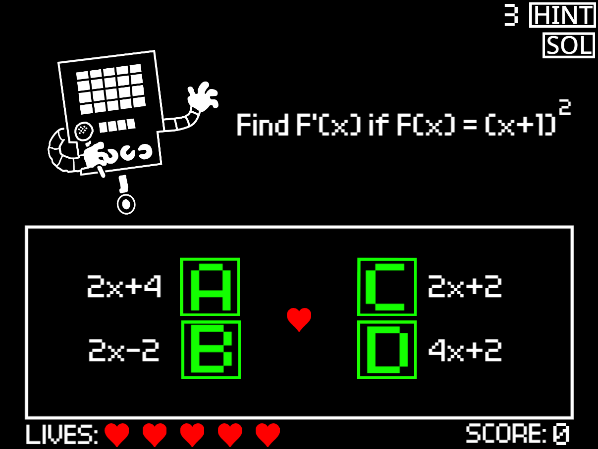
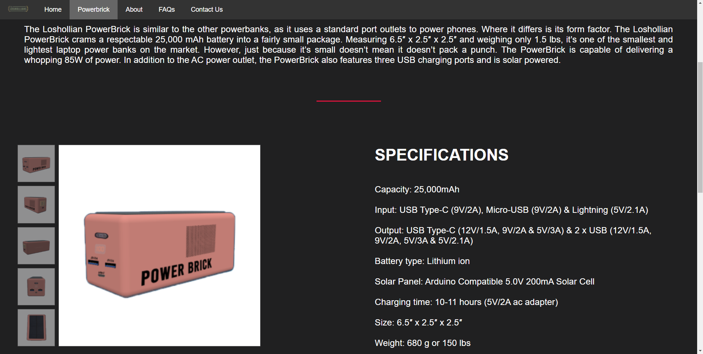

Seven years ago, I was playing a game on Roblox called daxter33’s paintball, when I accidentally shot a paintball through a wall and got a kill. This mere accident captivated my curiosity. How did I get that kill? As the sucker for information that I am, I craved for the answers, so I conducted mini-experiments to try to find them. I started by trying to shoot each gun through every wall in every map, then recording the data, but the testing conditions were too inadequate and inefficient since there were no practice servers. So, I did what any normal eleven-year-old would do; I tried recreating the game. Learning Java and Lua from YouTube videos, and utilizing some premade assets and scripts, I managed to recreate the different guns from the game. I then proceeded to replicate the maps of the game. After hundreds of tests, I analyzed the data gathered, and I noticed a trend where most guns can shoot through thin surfaces, which led me to another discovery — these guns can also shoot through floors. By the end, I concluded that due to the gun’s collision to other blocks was disabled, and the bullets would only appear on the tip of the weapon; the weapon, when piercing through, could shoot through thin walls. This mere accident ignited my passion and sparked an interest in programming.
Into the Cyberverse is an educational video game that utilizes interactive storytelling strategies to educate adolescents about identity theft and data privacy. In this project, I learned more about logic and general fundamental programming concepts such as critical thinking, etc.

Mind Portal is a simple website advocating for mental health awareness among students during the pandemic. In this project, I learned more about html, css, and javascript.
Traffic Light Classifier is a project from Udacity's Intro to Self-Driving Cars Nanodegree where I created a model that detects the state of a traffic light. In this project, I learned more about the basics of computer vision.
Joy Ride is a project from Udacity's Intro to Self-Driving Cars Nanodegree where the objective to code a car parking. In this project, I learned how to utilize and analyze data to create a useful function.
Implement a Matrix Class is a project from Udacity's Intro to Self-Driving Cars Nanodegree where the objective to create a class that modifies the normal operands in order to allow the different mathematical operations to matrices. In this project, I learned more about creating a class in python.
Implement Route Planner is a project from Udacity's Intro to Self-Driving Cars Nanodegree where I used different path-finding algorithms to find the shortest path from point A to point B. In this project, I learned more about algorithms, more specifically path-finding algortihms.
Predict Dog Breed is a project from Udacity's Machine Learning Engineer Nanodegree where I use convolutional neural networks in order to create a model that predicts the breed of a dog from an image. In this project, I was able to apply everything I learned in the course, while learning about convolutional neural networks.
Sentiment Analysis is a project from Udacity's Machine Learning Engineer Nanodegree where I built a plagiarism detector that detects whether a text is either plagiarized or not. In this project, I was able play with Data and different Features.
Sentiment Analysis is a project from Udacity's Machine Learning Engineer Nanodegree where I made a sentiment analysis model using SageMaker. In this project, I learned more about deploying the machine learning model into a simple web app using Amazon SageMaker.

Mettaton's Quaranquiz is an Undertale-inspired video game about Basic Calculus. In this project, I discovered the joy in watching a simple project develop into something cool.

The Powerbrick Website is a product website for the Powerbrick, a fictional product, made as a final project for my Empowerment Technologies Class. In this project, I learned about the basics frontend development, mainly html and css.
De La Salle University / Senior High School
Udacity / Intro to Self-Driving Cars
Udacity / Machine Learning Engineer
Coursera / Machine Learning
Coursera / Machine Learning for All
Redtomato Design Studio / Co-founder, Software Engineer Intern
- Represented the company as a student in various occasions
- Assisted in the internship program as a Manager and Intern
- Assisted in developing various web apps
- Experienced developing projects from start to finish
- Worked on a variety of projects
TechOpps / Co-founder
- Represented the organization in various occasions
- Managed and lead different projects
- Reached out to possible partners
- Met amazing people from the tech community
Symph / Machine Learning Engineer Intern
- Collected data for machine learning models - Helped with testing and fixing the special cases of the finished model